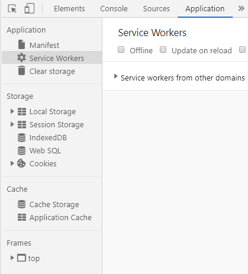

浏览器缓存是浏览器端保存数据用于快速读取或避免重复资源请求的优化机制，有效的缓存使用可以避免重复的网络请求和浏览器快速地读取本地数据，整体上加速网页展示给用户。浏览器端缓存的机制种类较多，总体归纳为九种，这里详细分析下这九种缓存机制的原理和使用场景。打开浏览器的调试模式——Application右侧就有浏览器的8种缓存机制。

webStorage分类
一、客户端
H5存储：
本地存储：localStorage&SessionStorage
离线存储：ApplicationCache
本地数据库存储：indexedDB、webSQL
H5之前：
本地存储：Cookie、IE早期版本的专属userData
二、服务端
Session Cookie、MySQL
http缓存是基于HTTP协议的浏览器文件级缓存机制。即针对文件的重复请求情况下，浏览器可以根据协议头判断从服务器端请求文件还是从本地读取文件，chrome控制台下的Network即展示的是浏览器的http文件级缓存。以下是浏览器缓存的整个机制流程。主要是针对重复的http请求，在有缓存的情况下判断过程主要分3步：
如果通过etag和last-modified判断，即使返回304有至少有一次http请求，只不过返回的是304的返回内容，而不是文件内容。所以合理设计实现expires参数可以减少较多的浏览器请求。
websql这种方式只有较新的chrome浏览器支持，并以一个独立规范形式出现，主要有以下特点：
websql API主要包含三个核心方法：
openDatabase方法可以打开已经存在的数据库，不存在则创建：
var db = openDatabase('mydatabase', '2.0', my db',2*1024);
openDatabasek中五个参数分别为：数据库名、版本号、描述、数据库大小、创建回调。创建回调没有也可以创建数据库。
database.transaction() 函数用来查询，executeSql()用于执行sql语句。
IndexedDB 是一个为了能够在客户端存储可观数量的结构化数据，并且在这些数据上使用索引进行高性能检索的 API。虽然 DOM 存储，对于存储少量数据是非常有用的，但是它对大量结构化数据的存储就显得力不从心了。IndexedDB 则提供了这样的一个解决方案。
IndexedDB 分别为同步和异步访问提供了单独的 API 。同步 API 本来是要用于仅供 Web Workers 内部使用，但是还没有被任何浏览器所实现。异步 API 在 Web Workers 内部和外部都可以使用，另外浏览器可能对indexDB有50M大小的限制，一般用户保存大量用户数据并要求数据之间有搜索需要的场景。
Cookie(或者Cookies)，指一般网站为了辨别用户身份、进行session跟踪而储存在用户本地终端上的数据(通常经过加密)。cookie一般通过http请求中在头部一起发送到服务器端。一条cookie记录主要由键、值、域、过期时间、大小组成，一般用户保存用户的认证信息。cookie最大长度和域名个数由不同浏览器决定，具体如下：
浏览器 支持域名个数 最大长度 IE7以上 50个 4095B Firefox 50个 4097B Opera 30个 4096B Safari/WebKit 无限制 4097B
不同域名之间的cookie信息是独立的，如果需要设置共享可以在服务器端设置cookie的path和domain来实现共享。浏览器端也可以通过document.cookie来获取cookie，并通过js浏览器端也可以方便地读取/设置cookie的值。
localStorage是HTML5的一种新的本地缓存方案，目前用的比较多，一般用来存储ajax返回的数据，加快下次页面打开时的渲染速度。
浏览器 最大长度 IE9以上 5M Firefox 8以上 5.24M Opera 2M Safari/WebKit 2.6M //localStorage核心API: localStorage.setItem(key, value) //设置记录 localStorage.getItem(key) //获取记录 localStorage.removeItem(key) //删除该域名下单条记录 localStorage.clear() //删除该域名下所有记录
值得注意的是，localstorage大小有限制，不适合存放过多的数据，如果数据存放超过最大限制会报错，并移除最先保存的数据。
sessionStorage和localstorage类似，但是浏览器关闭则会全部删除，api和localstorage相同，实际项目中使用较少。
application cahce是将大部分图片资源、js、css等静态资源放在manifest文件配置中。当页面打开时通过manifest文件来读取本地文件或是请求服务器文件。
离线访问对基于网络的应用而言越来越重要。虽然所有浏览器都有缓存机制，但它们并不可靠，也不一定总能起到预期的作用。HTML5 使用ApplicationCache 接口可以解决由离线带来的部分难题。前提是你需要访问的web页面至少被在线访问过一次。
使用缓存接口可为您的应用带来以下三个优势：
CacheStorage是在ServiceWorker的规范中定义的。CacheStorage 可以保存每个serverWorker申明的cache对象，cacheStorage有open、match、has、delete、keys五个核心方法，可以对cache对象的不同匹配进行不同的响应。
cacheStorage.has()
如果包含cache对象，则返回一个promise对象。
cacheStorage.open()
打开一个cache对象，则返回一个promise对象。
cacheStorage.delete()
删除cache对象，成功则返回一个promise对象，否则返回false。
cacheStorage.keys()
含有keys中字符串的任意一个，则返回一个promise对象。
cacheStorage.delete()
匹配key中含有该字符串的cache对象，返回一个promise对象。
这种方式基本不用，这一方法主要基于flash有读写浏览器端本地目录的功能，同时也可以向js提供调用的api，则页面可以通过js调用flash去读写特定的磁盘目录，达到本地数据缓存的目的。